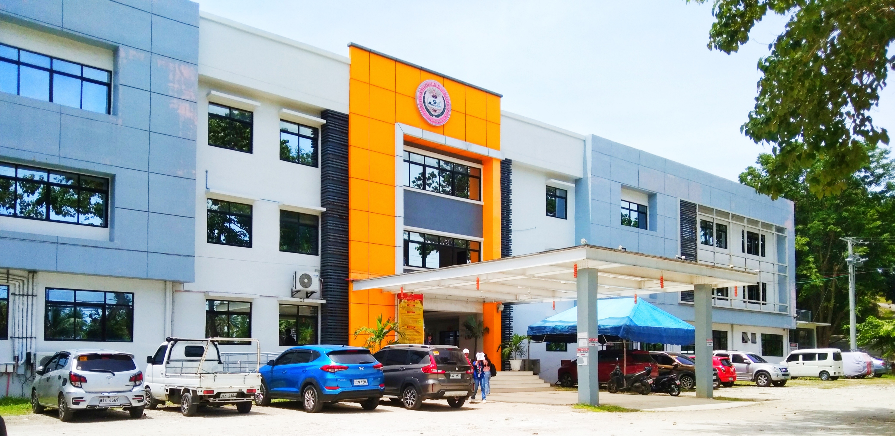
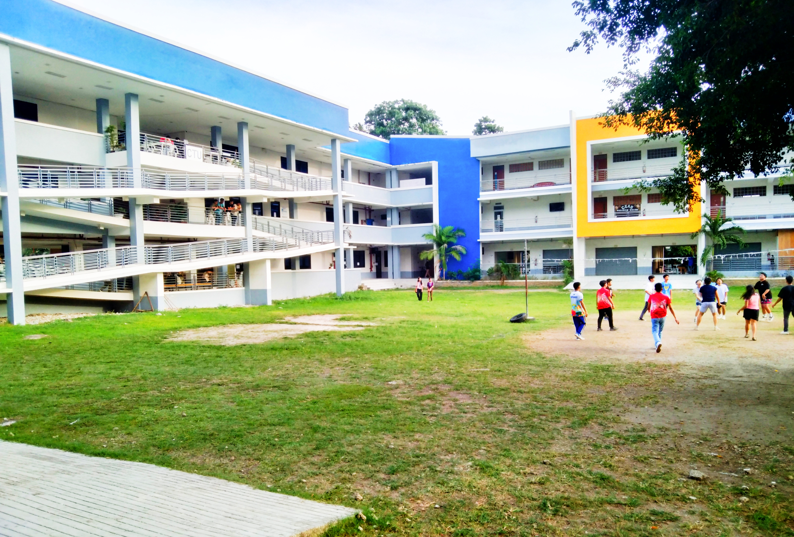
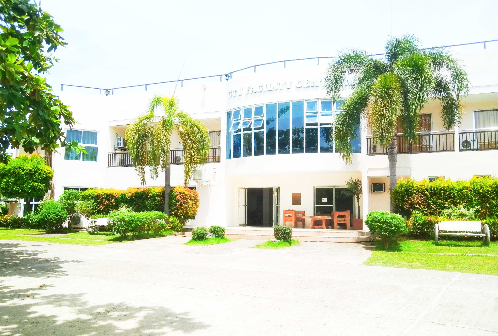
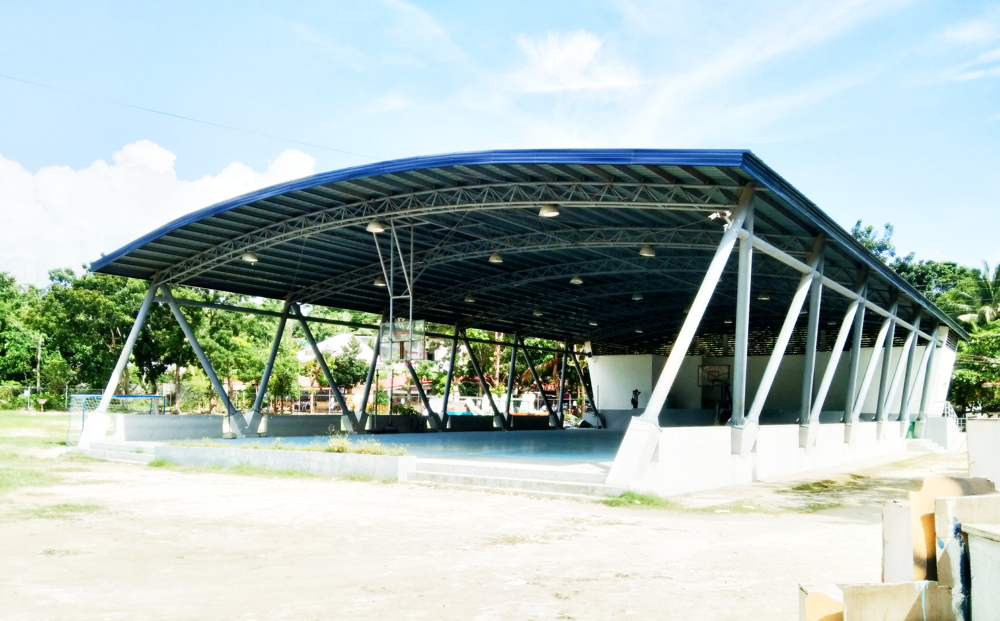
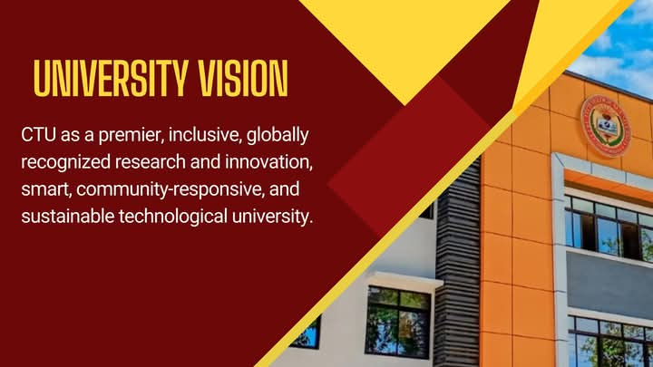
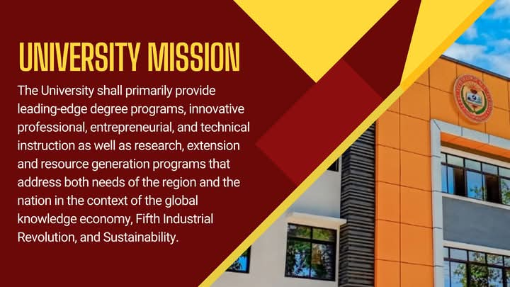
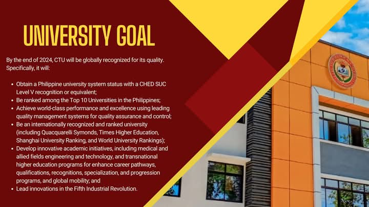
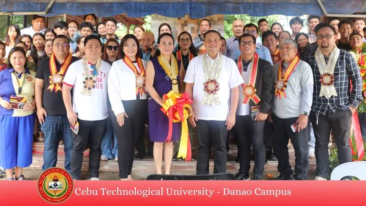
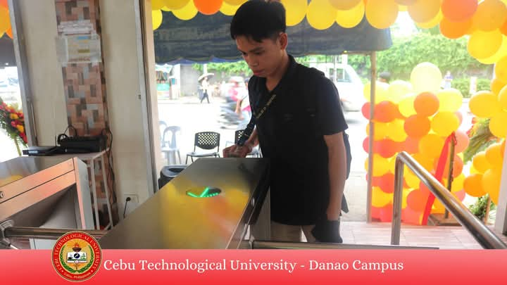
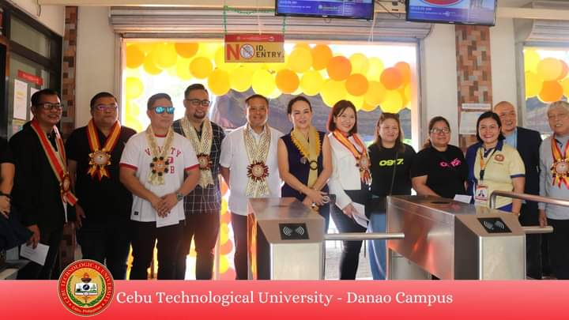

Welcome to Cebu Technological University - Danao Campus
Your gateway to the future
CEBU-TECH DANAO

CAMPUS HISTORY
CTU-DANAO started on June 1994 by virtue of the Danao Municipal Council Resolution naming it " Danao Provincial High School".
It was then converted into a national vocational secondary school on June 22, 1957, pursuant to Republic Act (R.A.)No. 1907. Its name was changed to Danao National Vocational School, supervised by then Cebu School of Arts and Trades in Cebu City in 1958.

QUADRANGLE
It serves as a gathering area for students.
The Quadrangle is a central space where the university holds its flag ceremonies, assemblies, and various large-scale events. Its open layout makes it ideal for formal gatherings and community activities on campus.

CENTRUM
A central hub for College of Management and Entrepreneurship.
The Centrum at Cebu Technological University Danao Campus serves as a hotel-like accommodation for guests attending campus events. It offers comfortable lodging and amenities, providing a welcoming space for visitors during university functions.
TENNIS COURT
Designated area where tennis is played.
The Tennis Court provides a specialized area for students and faculty interested in tennis. It supports both recreational play and competitive practice, promoting a diverse sports culture on campus.

KADASIG GYM
Likely a gymnasium named " kadasig"which could host sports activities, academic activities, and sessions.
The campus gym is a dedicated indoor space for basketball and other sports activities. With its spacious court, it’s a hub for both casual games and competitive tournaments.It might also be used for community or school events.
SPORTS COMPLEX
It's often used for tournaments, training, and various events..
The Oval is the campus's sports complex, designed for athletic events and outdoor recreational activities. It features a track and field area, encouraging students to participate in sports and physical fitness programs.

UNIVERSITY VISION
CTU aspires to be a "premier, multidisciplinary technological university".
...

UNIVERSITY MISSION
It primarily provide advanced professional and technical instruction for special purposes, advanced in studies and other technological and professional fields.
...

UNIVERSITY GOAL
Aims to produce well-equipped students with strong character and comprehensive knowledge.
...

LAUNCHING
The Student ID log in / log out Monitoring.
The event was attended by distinguished university officials, faculty, staff, and students, all gathered to witness the ribbon-cutting ceremony.The enthusiastic crowd highlighted the importance of this modernization, reflecting the university's commitment to enhancing campus efficiency and security through technological advancements. This initiative marks a forward-thinking approach in campus management.

STUDENT MONITORING
This image captures a student at Cebu Technological University - Danao Campus using the newly launched swipe login and logout system.
The student is seen scanning their school ID on the access terminal, which features a glowing indicator, signifying successful authentication. The setup is part of the university's modernized entry and exit process, ensuring a secure and efficient way to track attendance and campus access. The background is adorned with festive yellow and orange balloons, adding a celebratory vibe to the event, symbolizing a step forward in integrating technology into campus operations.

STUDENT MONITORING
The event was marked with a formal ceremony.
The new system signifies a step towards modernization, ensuring a more efficient way to monitor student and staff entry and exit. This initiative underscores the university's commitment to leveraging technology for better campus management.